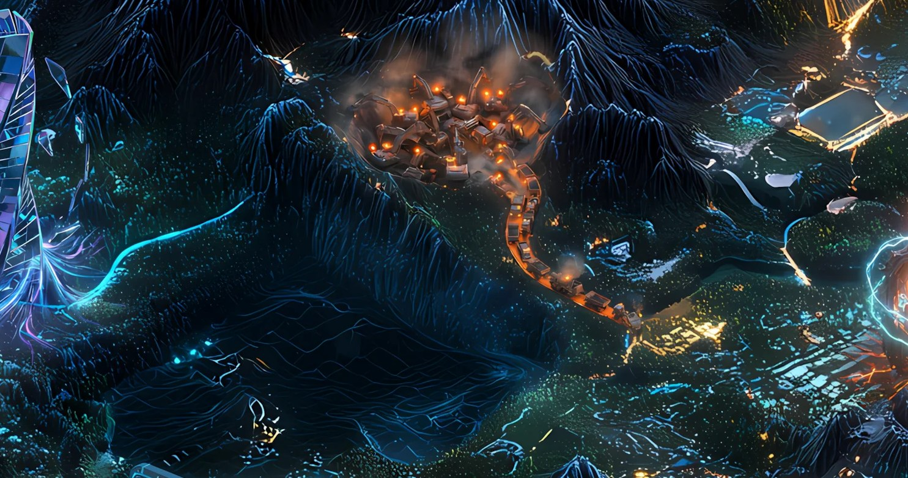

Record // INFRASTRUCTURE PLAYABLE TEARDOWN
CONGESTION MINE

An 'anyone can mine' token nearly choked the chain — speculation became a stress test.
▶ Play this teardown — operate the mechanism yourself →What happened
ORE, a Bitcoin-style proof-of-work mineable token built as a program on Solana, launched on April 2, 2024. Its v1 mining design was easily gamed and incentivized mass transaction spam, briefly making ORE one of the most-used programs on Solana. Combined with a surge in memecoin activity, this contributed to severe congestion where the majority of transactions were failing; its creator paused v1 on April 16, 2024, and relaunched a redesigned v2 on August 6, 2024.
Why Solana remembers it
ORE became a flashpoint in Solana's 2024 congestion crisis, illustrating how spam-incentivizing program design could compound a fee market under stress and degrade the whole network — congestion that, alongside a known QUIC bottleneck, drove Solana's v1.18 central-scheduler fixes.
On the map
A frenzied open-pit mine whose diggers churn the ground until the roads choke with traffic.